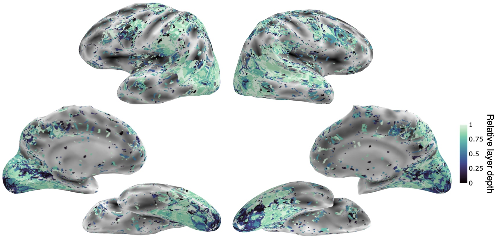

Abstract
Deep learning models trained on computer vision tasks are widely considered the most successful models of human vision to date. The majority of work that supports this idea evaluates how accurately
these models predict brain and behavioral responses to static images of objects and natural scenes. Real-world vision, however, is highly dynamic, and far less work has focused on evaluating the
accuracy of deep learning models in predicting responses to stimuli that move, and that involve more complicated, higher-order phenomena like social interactions. Here, we present a dataset of natural
videos and captions involving complex multi-agent interactions, and we benchmark 350+ image, video, and language models on behavioral and neural responses to the videos. As with prior work, we find that
many vision models reach the noise ceiling in predicting visual scene features and responses along the ventral visual stream (often considered the primary neural substrate of object and scene recognition).
In contrast, image models poorly predict human action and social interaction ratings and neural responses in the lateral stream (a neural pathway increasingly theorized as specializing in dynamic, social vision).
Language models (given human sentence captions of the videos) predict action and social ratings better than either image or video models, but they still perform poorly at predicting neural responses in the
lateral stream. Together these results identify a major gap in AI's ability to match human social vision and highlight the importance of studying vision in dynamic, natural contexts.
Methodological Overview
Figure 1: A summary of our overall approach. We extract representations from over 350 image, video,
and language models based on 3 s videos of human social actions or their captions. We then use model representations to predict human behavioral ratings and the neural
responses recorded using fMRI to the videos.
Prediction Performance for Behavioral Responses

Figure 2: Prediction performance of all models in predicting behavioral responses. Each dot is the performance of a single model. The lines indicate the mean
performance for image (pink), video (green), and language (blue) models. The horizontal gray lines are the inter-subject agreement, which is approximately the maximal level that any
model could be expected to perform. Brackets and asterisks indicate significantly different performance between different classes of models.
(p < 0.05: *, p < 0.01: **, p < 0.001: ***)
Human-Language Model Alignment
Figure 3: (A) Example sentence perturbations. (B) The performance of each language model (dots) in predicting human behavioral
ratings following selective perturbation of the sentence captions. The bars indicate the mean performance across models for each condition and rating. Asterisks indicate that there is a
significant degradation in model-behavioral alignment following perturbation relative to the unperturbed sentence.
Model Performances Across Brain ROIs

Figure 4: The performance of each model (dots) in predicting the average response in each ROI. The colored lines indicate the mean performance of the different classes of models,
and the horizontal gray line is the split-half reliability of the voxel responses in each ROI averaged across participants. Brackets and asterisks indicate significantly different performance between
different classes of models.
(p < 0.05: *, p < 0.01: **, p < 0.001: ***)
Vision Models Capture Neural Responses Better Than Language Models

Figure 5: Test set encoding performance. Visualization of the test set encoding performance of the best performing layer in the training set for each voxel from any (A) image, (B) video, and (C) language model. This is shown on the lateral and ventral surface in right hemisphere of one representative participant.
Hierarchical Alignment Between Models and Brains

Figure 6: Whole-brain hierarchical alignment. Relative depth of the best performing model layer across all vision models (image and video models) in the whole brain of one representative subject.
Model Performance Difference by Architecture

Figure 7: Model performance by architecture. We evaluate the impact of model architecture (convo- lutional vs. transformer) on the prediction of human ratings. Each dot represents the best fitting layer of a model, with solid bars denoting mean encoding score for a given cluster per behavioral rating. In gray bars, we plot the reliability as a noise ceiling for our data. The graph shows that architectural differences do not significantly impact the models' predictive capabilities for the tasks studied.
Model Performance Difference by Learning Objective

Figure 8: Model performance by learning objective. Here, we compare the predictive performance of models trained under different learning objectives (supervised vs. self-supervised) across behavioral ratings. To control for model architecture we select only ResNet50 based models. Each dot represents the best fitting layer of a model, with solid bars denoting mean encoding score for a given cluster per behavioral rating. In gray bars, we plot the reliability as a noise ceiling for our data. This analysis indicates whether the learning objective influences behavior-model alignment.
Language Model Performance Differences Based On Selective Perturbation Across Brain ROIs

Figure 9: The average performance in ROIs of each language model (dots) in predicting neural responses following selective perturbation of the sentence captions. The bars indicate the mean performance across models for each condition and rating. Asterisks indicate that there is a significant degradation in model-neural alignment following perturbation relative to the unperturbed sentence.
Hierarchical Alignment of Model Layers with Brain ROIs

Figure 10: Hierarchical alignment of model layers with brain responses. We calculate the relative layer depth of the best performing layer per model in each lateral stream ROI. On the y-axis, 0 represents the input model layer and 1 represents the output layer. The graph shows the relative prediction strength of model layers for each ROI, suggesting a lack of hierarchical alignment in lateral visual regions.
Model Performance by Architecture Across Brain ROIs

Figure 11: Model performance by architecture across ROIs. We compare the performances of convolutional and transformer architectures in predicting neural responses across various brain regions. Each dot represents the best fitting layer of a model, with solid bars denoting mean encoding score for a given cluster per ROI. The graph shows that architectural differences do not significantly impact the models' predictive capabilities for both ventral and lateral ROIs.
Model Performance by Learning Objective Across Brain ROIs

Figure 12: Model performance by learning objective across ROIs. Here, we evaluate the impact of training objectives (supervised vs. self-supervised) on predicting neural responses across different brain regions. To control for model architecture we select only ResNet50 based models. Each dot represents the best fitting layer of a model, with solid bars denoting mean encoding score for a given cluster per ROI. This analysis illustrates that differences in training objective do not significantly impact the models' predictive capabilities for both ventral and lateral ROIs.